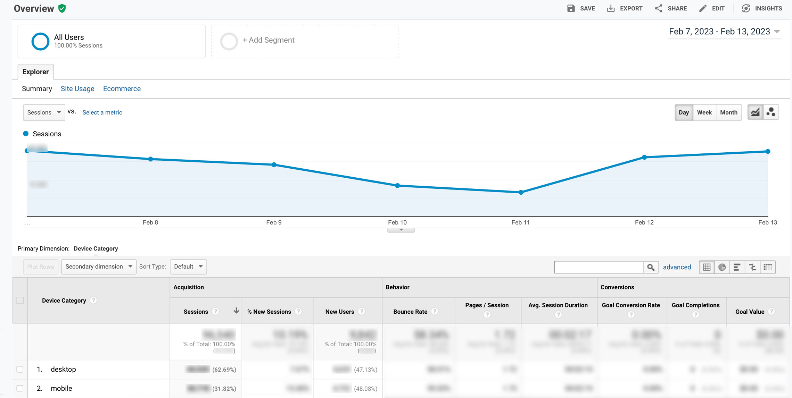
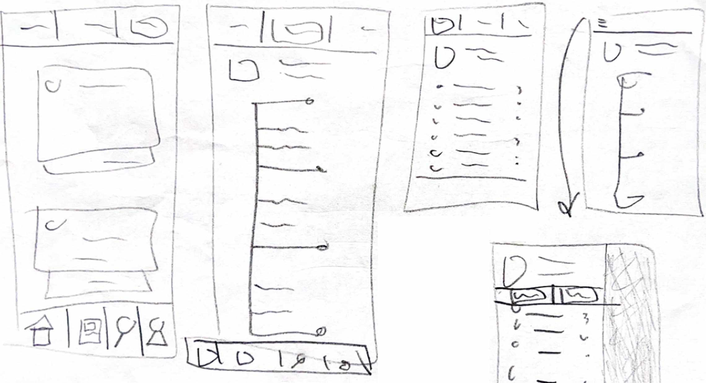
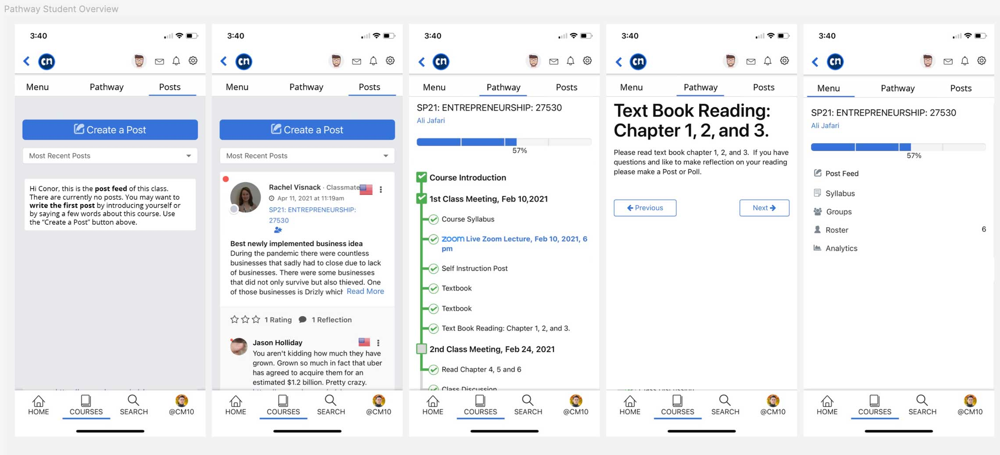

The Design Process
Quantitative Analysis
In reviewing CourseNetworking's Google Analytics page, I discovered that around 50% of all new users were on a mobile device. This was significantly higher than our estimated 25% mobile usage, so I continued with a quantitative analysis of more data.
This data indicated that the Pathway courses were areas in the greatest need of research, as 30% of our new clients are using them.
My goal at this point in the research process was to understand what our users were having issues with and how they used CN. This was a very efficient method to gather large amounts of data and informed the design process by highlighting where we needed to focus our research.
Usability User Research
With the audience identified, the next step of the design process was a usability testing project of our mobile site with real nearby college students. I needed direct and immediate qualitative feedback on the user interface and roadblocks.
To conduct this research, I had the CourseNetworking home page open on a mobile device and gave them a set of 4 goals:
- Navigate to the Biology 101 course.
- Open the activity called Plants and Animals.
- Create a post.
- Open the course's Syllabus.
I then directed them to complete the goals, asked them to narrate their thoughts while they were completing them, and took notes of their responses and and issues I saw them having.
Through this research, I found that the language used in the Pathway course tab navigation was unfamiliar to many users and navigating the interface was jerky and unclear. 80% of users could not find their assignments in the course.
This research demonstrated clear areas of improvement and obvious roadblocks that users were facing in completing their goals.
Sketching
After the user roadblocks were defined, I began sketching design solutions based on the result of the previous research and sharing them with the team. This was mainly focused on simplifying the full-page context switching navigation, as well as user more clear language in the interface.
I prefer sketching because it provides a quick and inexpensive way to get feedback from my team and identify design issues.
These sketches led directly to the final product, such as changing the mobile navigation to a tab-based system, and by using the word "Activities" rather than "Pathway". We also added a "Posts" tab to allow users to easily communicate in their courses.
Prototyping
With my sketches finalized, the next step was to create a working prototype in Figma. This process was chosen to be able to have a testing prototype with users, as well as being able to provide the developers a completed UI to develop from.
Using elements from the CN Design System, I created a new navigation for Pathway courses that did not involve full-page context switching, and instead used a tab navigation system. The names of the tabs used more familiar language like "Activities" to direct users to their assignments.
Usability Testing
With a working prototype, I was then able to conduct another round of usability testing to validate our new navigation and wording to validate interface changes. I followed the same process as our first round of user testing.
This result clearly showed that the navigation changes improved usability and removed roadblocks.
Quantitative Analysis II
To analyze the results of our research and design, I conducted a second round of quantitative analysis by reviewing feedback from a large student survey. Out of the 53 users, 6 had issues using the site, and 3 had minor usability issues.
This was a significant improvement from the initial round of usability testing, where only 20% of users were able to use the site easily. This showed a 59% improvement in user satisfaction, and also pointed out some future usability issues to research.
54% of users said they used the Post tool to communicate with their classmates, validating the choice to include Posts in the tab navigation.
Conclusion
This research project very successfully identified, designed, and improved a significant roadblock for users in the Pathway course on CN. We had a 59% improvement on the usability of the course, improving the site for thousands of users. Usability research data, customer feedback, and client surveys were used to identify problems and validate fixes via research.
This was one of the most user-impacting design projects I have worked on. This research demonstrated clearly the importance of using quantitative analysis to guide where to spend time and money during a project. All of the data collected helped us identify an under-researched user base and make meaningful improvements to their user experience.